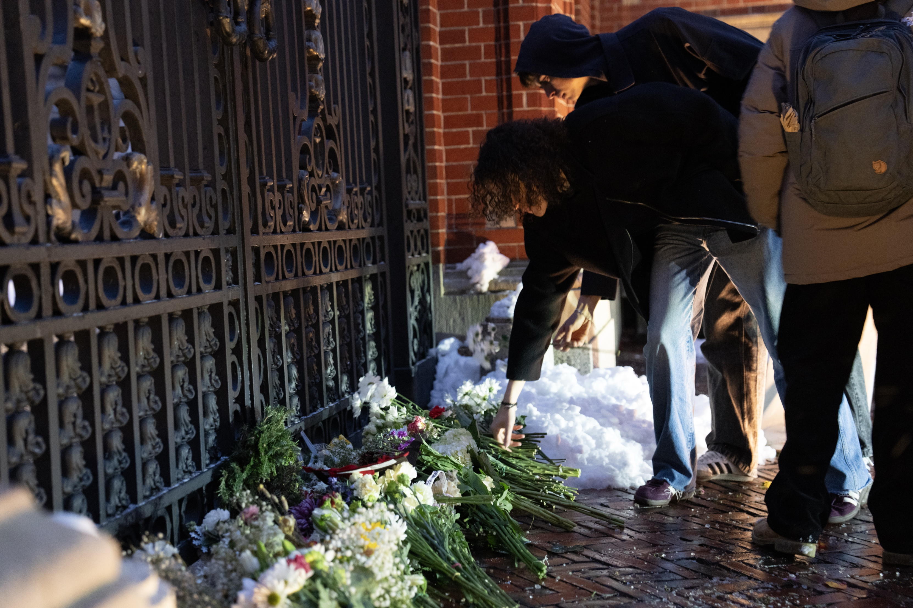
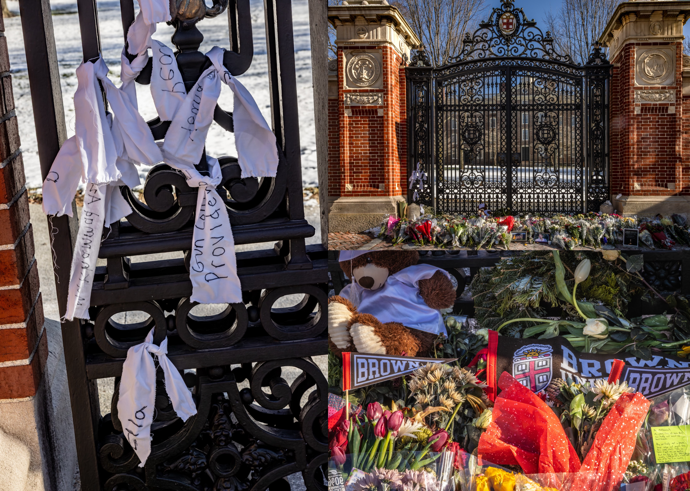
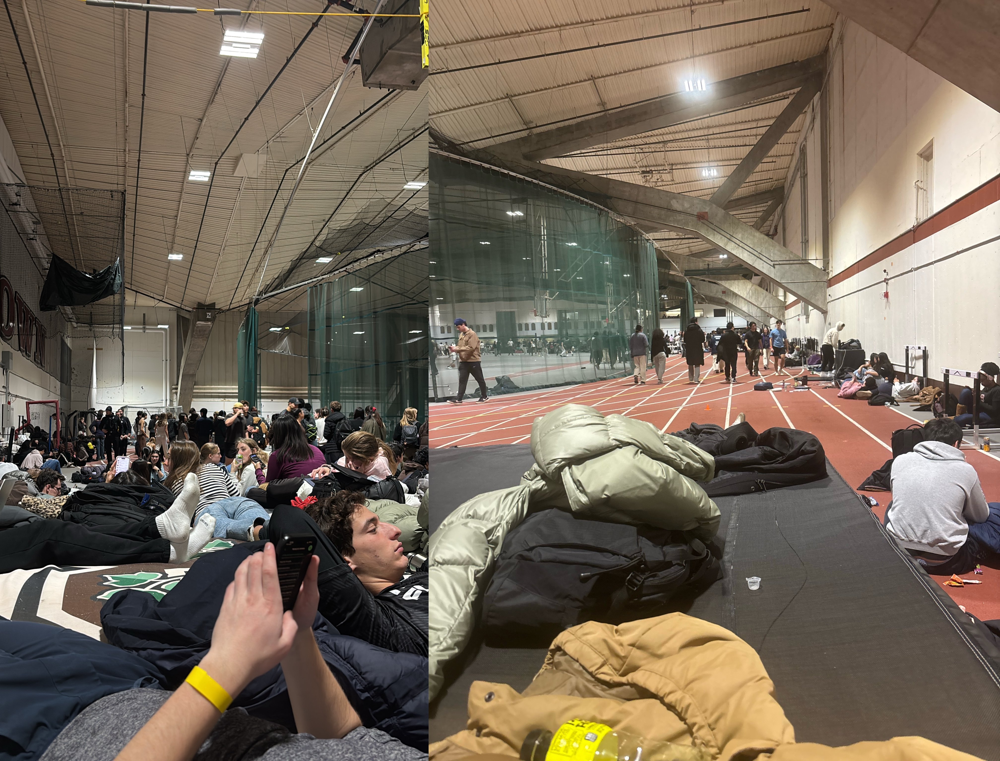
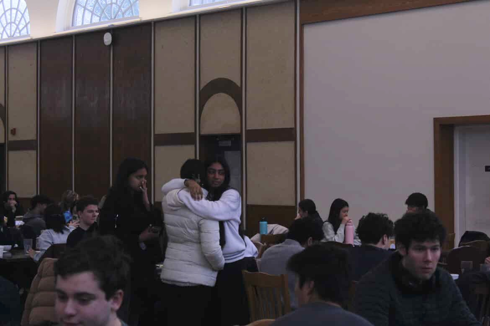
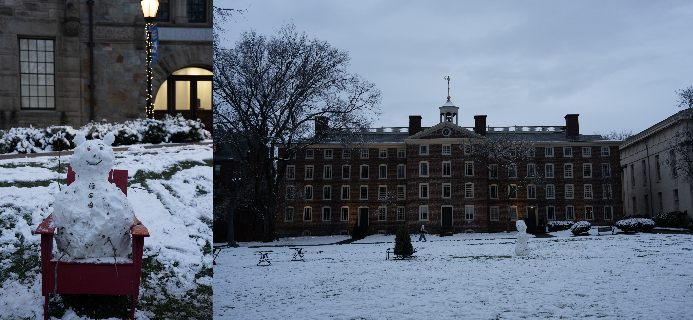
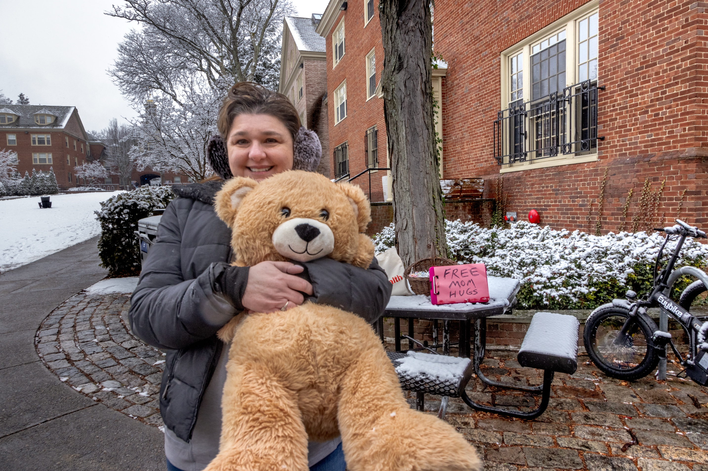
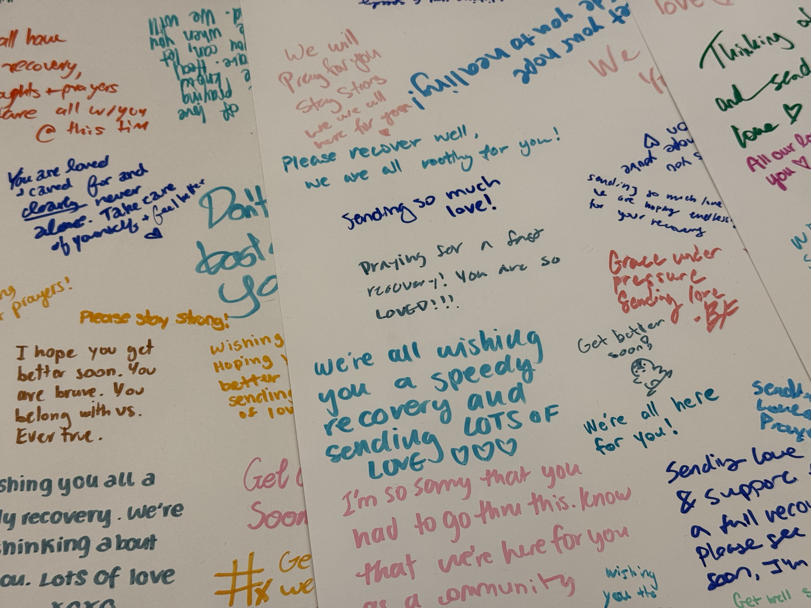
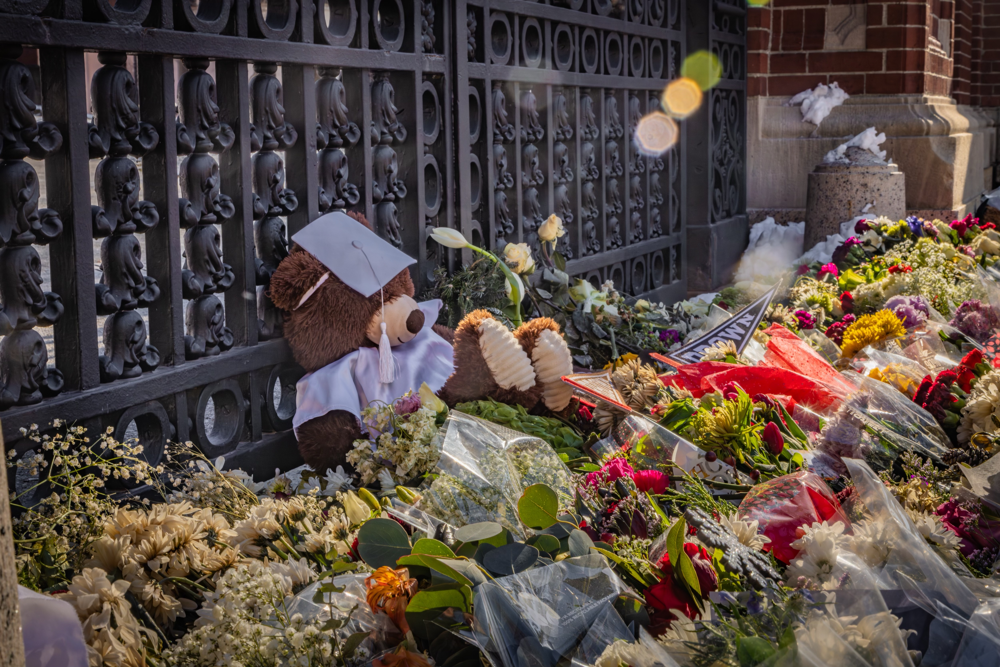

On Saturday, a tragedy shook Brown’s campus.
Two students were killed, and nine others were injured in a mass
shooting that occurred in Barus and Holley. In the aftermath,
the Brown and Providence communities have shown up for one
another — providing shelter and meals to students and raising
money for victims.
The Herald spoke to members of the community who supported one
another, both on the night of the incident and in the days that
followed.
Students constructed a memorial in front of the Van Wickle Gates
on Sunday.
They laid tributes, including flowers, white ribbons, Brown
flags and a teddy bear.
‘They sacrificed their own safety’: Providing shelter during
lockdown
As news of the shooting spread across campus Saturday afternoon,
several local businesses took students in, offering them shelter
and food.
After being alerted of an active shooter, the staff at Ceremony
— a popular cafe and teahouse — dimmed the lights, pulled the
curtains down and flipped chairs onto tables, according to
Cheyenne Gansell, Ceremony’s sales and marketing specialist.
For the next several hours, eight students and five employees
sheltered in place in the Ceremony basement.
Once the lockdown was lifted, Gansell and other employees drove
students home. Some employees housed students overnight. “I
think it was really important to be there in community, with the
community, for the community,” she said.
The next day, one of the students who had sheltered in the
Ceremony basement stopped by the store to buy one last matcha
before she went home, and to thank the employees for hiding her,
Gansell said.
Coffee Exchange, a local coffee shop, took in about 30 people on
Saturday night, most of them students, according to Owner
Charlie Fishbein. The store turned all the lights off once the
alert was sent out, and students hid in the bathroom and the
back stairwell.
“We were in the dark for seven hours,” Fishbein told The Herald,
describing how everyone was quiet, passing the time on laptops
and phones or by reading books. “The atmosphere was surreal,” he
added. Taste of India, a restaurant across the street, provided
food later in the evening, which was served “buffet-style with a
flashlight,” Fishbein said.
When students and staff began to leave the coffee shop at around
11 p.m., Fishbein made sure everyone had a ride and a place to
go.
Students who took shelter in the Olney-Margolies Athletic Center
were met with support from several non-profit organizations.
Julia Antony ’26, who was working at the OMAC when the shooting
happened, noted that most students there “hadn’t eaten in hours”
and that “it was really comforting” when volunteers from
non-profit groups showed up.
“The fact that they were there and they sacrificed their own
safety to help us was really admirable,” Antony said.
Over the course of the weekend, Red Cross volunteers provided
food and refreshments for over 1,500 people, including
“students, faculty and local responders,” according to a
statement sent to The Herald from the American Red Cross
Connecticut and Rhode Island Region.
Students sheltered in the OMAC on the night of Dec. 13.
‘A source of stability’: Community members open homes to
students
Many Brown faculty and staff also opened their doors to students
in need.
Vio Diniz, a cashier with Brown Dining Services for over 20
years, was at home when the University alerted her of the
shooting. She welcomed several Brown students into her home
until the shelter-in-place order was lifted. Some stayed the
night.
“Brown students, they are like my kids,” she said.
When the shooting occurred, Associate Professor of History
Jeremy Mumford was in the middle of leading a HIST1976V:
“History of Childhood” seminar of about 12 students at his home.
Rather than proctoring an exam during that time slot, Mumford
had opted to host the class for a final discussion and dinner.
As soon as they learned of the attack, Mumford and his wife,
Professor of Biology, Data Science and Computer Science Sohini
Ramachandran, told students they could stay the night at their
house.
“My daughter, who’s 12, was very interested in making sure that
everyone had a comfortable bed,” Mumford said, recalling how she
“gave her bed” to students and “went around making up a bed on
the couches.”
Because there wasn’t enough space in the couple’s house to
shelter everyone, Ramachandran called a neighboring professor to
take in half of the students. Friends of students in the class
who “didn’t have anywhere to go” also arrived later at the house
to take shelter, according to Mumford.
Ellia Sweeney ’21 MD’25 called her friends who were still
students, offering her family’s home in Cranston to “whoever
needed a place to stay that night.” Three students took her up
on her offer.
“The night was harrowing,” Sweeney said. Instead of sleeping,
she stayed up sending text messages checking in on her friends
at Brown.
The following night, when it was announced that the detained
person of interest was released, Sweeney sent out another wave
of messages saying her home was open. A total of 10 people came
over for dinner, and three stayed the night. She drove them to
the airport the following morning.
“I can’t be prouder to be part of the Brown community,” Sweeney
said, expressing her appreciation for those who helped students
with transportation and housing.
Others, like Adjunct Lecturer of Visual Arts Susanna Koetter,
offered to drive students to the airport on Sidechat, an
anonymous online forum for college students.
“I want to be a source of stability for my students, for all the
students,” Koetter said.
Students reunited in the Ratty on the morning
of Dec. 14.
‘It’s a small gesture’: Donating time and resources
The Undergraduate Council of Students opened a community
assistance form, which received over 2,000 responses as of
Monday evening, according to UCS President Talib Reddick ’26.
Most of the responses have been from alums, parents and
community members offering financial support, rides, housing and
other supplies, he said.
The idea for the form was proposed by First-Year Representative
Cindy Sun ’29, who has been “really leading the charge in terms
of monitoring everything,” according to Reddick.
Sun said she first got the idea after her roommate’s mom offered
her a ride and a place to stay. “I realized that I was really
lucky to be part of a community,” Sun told The Herald. “I wanted
to make sure that the people who didn’t have that…would be able
to get a ride, a place to stay, food if they needed it.”
“People everywhere” — including Brown alumni and community
members at Columbia, Yale and Tufts — have offered support via
the form, Sun said. Some mental health professionals have also
reached out to offer counseling services via the form, she
added.
Reddick also worked with Uber and Lyft to provide community
members on campus with discount codes for travel.
“Our hearts are with the Brown University community,” said
Senior Public Policy Manager at Lyft Brendan Joyce. “It’s a
small gesture, but we hope a meaningful gesture to help folks
with their transportation needs during this difficult time.”
Brunonians turned the overnight snowfall into
snowmen on the Main Green.
‘Exemplifies the spirit of Brown’: Raising funds for victims
and survivors
Samira Umurzokova, the sister of Mukhammad Aziz Umurzokov, one
of the students who was killed during the shooting, began a
GoFundMe that raised over $490,000 as of Wednesday. The GoFundMe
aims to help with “expenses the family will have to face,” the
description reads. Any remaining donations will go toward a
charity in his name.
Another GoFundMe, organized by Tiffany Netto MD’27, raised
nearly $87,000 to support the hospitalized victims’ medical
bills. “I am completely floored by how quickly money was
raised,” Netto said.
The fundraiser is currently paused as Netto is working with
President Christina Paxson P’19 P’MD’20 and deans at Warren
Alpert Medical School to distribute the funds.
“I think this fundraiser really exemplifies the spirit of
Brown,” Netto said. Despite being in a city, she said the
University has a “small town community feel.”
Students and alumni have also raised funds for the victims and
students trying to get home.
Autumn Wong ’25 — an alum living in Miami who started the Bruno
Flight Fund GoFundMe — raised over $20,000 to assist with any
additional travel costs for students departing campus early.
Wong said she has been able to cover the cost of 22 flights as
of Tuesday, and is working on getting in touch with Delta and
American Airlines to rebook students’ flights.
Wong was a Meiklejohn and Community Coordinator as a student,
and she said she began reaching out to her former residents and
advisees who are still at Brown when she heard the news. She
started covering flights for students out of pocket, and once
she “drained” her savings account, she started the GoFundMe to
offset her personal costs and cover more flights.
“I hope the students just feel really supported,” she told the
Herald, adding that “it’s probably a great stress relief to
(not) have to worry about one more thing and just focus on
getting back to their families.”
Andrea Capotosto gave out "free mom hugs" outside the Sharpe
Refectory on Sunday.
‘Support and comfort’: Sharing meals and kind words
Andrea Capotosto, senior director of finance, operations and
analysis at the School of Public Health, gave out “free mom
hugs” outside the Sharpe Refectory the day after the shooting.
She was inspired by seeing “someone doing free dad hugs at a
pride event a couple years ago,” she said. “I just saw the
reaction of the people who were there, and I just found it so
moving.”
“If my children were far away from me and they were scared, I
would want someone else to do what I did,” she continued. “I
wanted to remind people that for every tragedy that happens,
there’s goodness out there, and people that want to help,” she
added.
Inside the Ratty, Brown community members came together to
support victims of the shooting through a poster-making station
that Daniel Soto Parra ’28 helped manage. Students wrote
messages of support on posters for their peers recovering in the
hospital.
In a message to The Herald, Soto Parra thanked everyone who
contributed to the posters, adding that they were delivered to
Rhode Island Hospital later that day. Soto Parra also started a
petition calling on Brown to require ID swipes for all
University buildings at all times. The petition had over 800
signatures as of Wednesday.
“It should be how we come together as a community, rather than
the violence, that defines this event,” he said. “There is no
darkness that love cannot turn into light.”
Kabob and Curry, a restaurant on Thayer Street, gave all
students — and any community member who asked — a free meal on
Sunday. Madhav Basnet, one of the managers, said he was “very
happy to serve” the Brown community.
About 120 students came by for a free meal, according to Basnet.
He checked to make sure everyone who ate at the restaurant had a
safe place to go after, and offered free food for them to take
home.
“Brown is very close to us. This is our kind of community,” he
said.
Soto Parra helped manage a poster-making station to send
messages of support and
encouragement to students recovering in the hospital.
Joseph Oduro ’25.5, a teaching assistant for ECON0110:
“Principles of Economics” who witnessed the shooting, expressed
gratitude for peers who have provided “support and comfort” to
him in the days following the tragedy.
“That has been extremely helpful, just knowing that I have a
community behind me,” he said in an interview with The Herald.
“And that’s the community that I love and will support and
continue to try my best to protect at all costs.”
“Continue to lean on your brothers and sisters,” he said.
“That’s going to be the best way … to really be able to thrive
on campus once again.”







